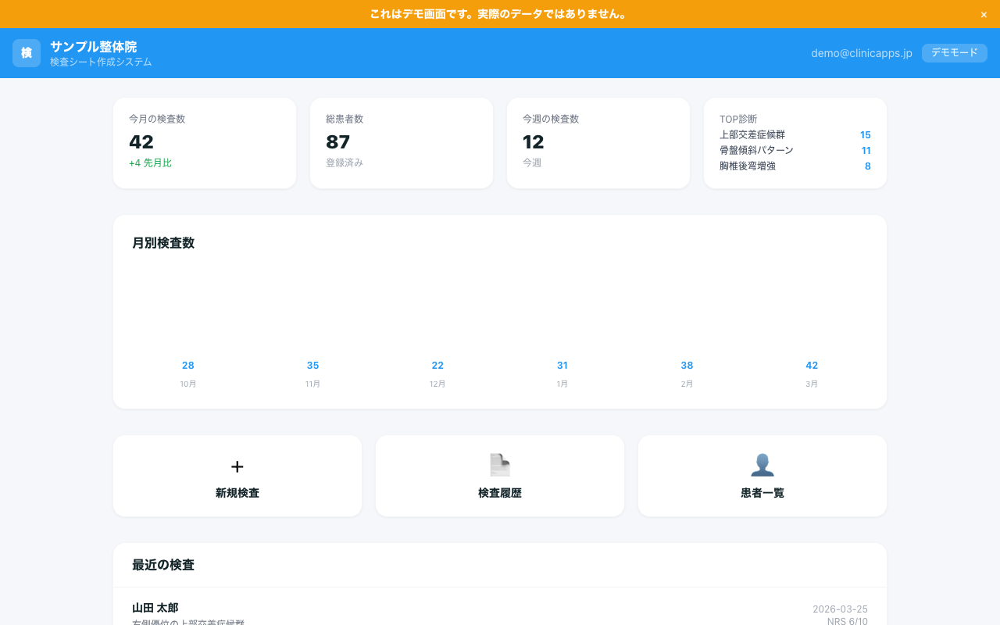
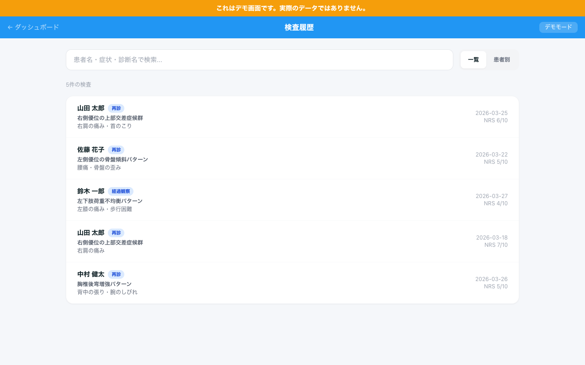
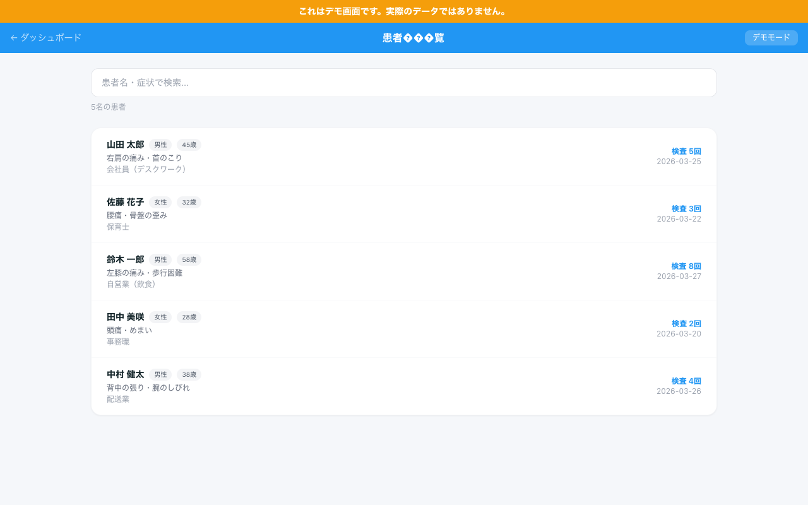

DEMO 実際のアプリ画面

身体の歪みを数値化し、人体図で可視化。
ビフォーアフター比較で患者に「変化」を伝える検査アプリ。

立位、座位、上半身の3段階で身体を検査。
足元影響、上半身影響、全体偏位、体幹回旋を自動で特定します。
結果は人体図イラストで表示。
患者にそのまま見せるだけで、状態が一目で伝わります。
立位、座位、上半身の順で9箇所をチェック。歪みの原因を自動で判定します。
歪みの状態を人体図イラストで視覚化。患者への説明がその場で完結します。
前回と今回の検査結果を人体図と数値で並べて比較。変化が一目瞭然です。
来院ごとの改善推移をグラフで表示。長期的な変化を患者と共有できます。
患者用レポートと施術者用レポートをPDF出力。紙で渡すことも可能です。
患者カルテはクラウドに自動保存。iPad、スマホ、PCどこからでもアクセスできます。
施術前後の検査データを自動で比較。人体図と数値の両方で変化を表示します。
患者が自分の目で改善を確認できるから、信頼が生まれ、次の来院につながります。
9箇所のチェックを画面に沿って入力するだけ。手書きの記録も不要になります。
ビフォーアフターで変化を見せることで、患者の継続意欲が高まります。
「ちゃんと検査してくれる院」という信頼感。口コミにもつながります。




先着5名限定 / 2026年4月7日(月)締切
モニター枠が埋まり次第、通常価格に切り替わります。
Stripeによる安全な決済処理。
クレジットカード情報は当社サーバーに保存されません。